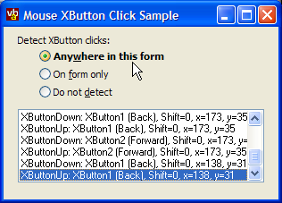

VB5 XButton Sample (18K)
VB5 XButton Sample (18K)
 VB6 XButton Sample (17K)
VB6 XButton Sample (17K)
 27 Jun 2003
27 Jun 2003
First Posted
 Restrict Mouse Movement to an Area of the Desktop
Restrict Mouse Movement to an Area of the Desktop
 Win32 Hooks in VB - The vbAccelerator Hook Library
Win32 Hooks in VB - The vbAccelerator Hook Library
 Subclassing Without The Crashes
Subclassing Without The Crashes
 Moving, Clicking and Tracking the MousePointer in Code
Moving, Clicking and Tracking the MousePointer in Code
 (Incomplete) Docking Forms In VB
(Incomplete) Docking Forms In VB

Detecting Mouse XButton Clicks
Recently I discovered that my mouse had two strange buttons on the left-hand side (until then I'd thought that the mouse's case just wasn't very well put together). Turns out these are the 'X Buttons' and can be used for moving backwards and forwards in Explorer and IE. This sample demonstrates how you can intercept clicks on these buttons to provide the same functionality in a VB application.
Intercepting XButton Messages
XButton clicks are sent to a Window in a similar way as the more traditional mouse button actions are. There are six XButton messages; the first group is for mouse actions in the client area and the second for mouse actions in the non-client area. Each group has an individual message for mouse down, mouse up and double-click actions.
This allows you to detect XButton actions over individual windows or controls, however, there are few (if any) applications which offer the ability to perform a different action for these buttons on a per-control basis. Typically you want to use the buttons a similar way to Explorer or IE, which respond to clicks over any area of the window.
This sample provides a class you can use to do either type of processing. The Subclassing and Timer assistant is used for detecting messages sent to an individual form or control, whilst the Hooking Library is used to detect events anywhere over a particular form.
Detecting XButton Events Using a Subclass
In order to do this, you need to intercept all of the XButton mouse events sent or posted to the window you want to detect events for:
- Client Messages: WM_XBUTTONDOWN, WM_XBUTTONUP, WM_XBUTTONDBLCLK
These messages encode information about the mouse's position, the button which was pressed and the shift state as follows:
- wParam contains the button that has been pressed, and the shift state using the API MK_.. constants in the low-word.
- lParam contains the position of the mouse relative to the client area of the window. The x coordinate is in the low-word and the y coordinate is in the high-word.
- Non-Client Messages: WM_NCXBUTTONDOWN, WM_NCXBUTTONUP, WM_NCXBUTTONDBLCLK
These messages encode the mouse position and the button which was pressed as follows:
- wParam contains the non-client hittest code in the low-word and the button that has been pressed in the high-word using the API XBUTTON.. constants.
- lParam contains a pointer to the absolute mouse position as a POINTS structure.
Decoding this information is performed using this code:
Private Function ISubclass_WindowProc( _
ByVal hwnd As Long, _
ByVal iMsg As Long, _
ByVal wParam As Long, _
ByVal lParam As Long) As Long
'
Dim tP As POINTAPI
Dim x As Single
Dim y As Single
Dim eShift As ShiftConstants
Dim eBtn As XMouseButtonConstants
Dim bConsumed As Boolean
Select Case iMsg
Case WM_XBUTTONDOWN, WM_XBUTTONUP, WM_XBUTTONDBLCLK
tP.x = (lParam And &HFFFF)
tP.y = (lParam And &H7FFF0000) \ &H10000
If (lParam And &H80000000) Then
tP.y = tP.y Or &H8000&
End If
x = m_objTo.ScaleX(tP.x, vbTwips)
y = m_objTo.ScaleX(tP.y, vbTwips)
eBtn = (wParam And &H60&)
eShift = (wParam And &HC&)
If (iMsg = WM_XBUTTONDOWN) Then
RaiseEvent XMouseDown(eBtn, eShift, x, y, bConsumed)
ElseIf (iMsg = WM_XBUTTONUP) Then
RaiseEvent XMouseUp(eBtn, eShift, x, y, bConsumed)
Else
RaiseEvent XBtnDblClick(eBtn, eShift, x, y, bConsumed)
End If
If (bConsumed) Then
ISubclass_WindowProc = True
End If
Case WM_NCXBUTTONDOWN, WM_NCXBUTTONUP, WM_NCXBUTTONDBLCLK
GetCursorPos tP
ScreenToClient m_hWnd, tP
x = m_objTo.ScaleX(tP.x, vbTwips)
y = m_objTo.ScaleX(tP.y, vbTwips)
If (wParam And &H10000) = &H10000 Then
eBtn = XBUTTON1
Else
eBtn = XBUTTON2
End If
eShift = _
vbShiftMask * Abs(Not (GetAsyncKeyState(vbKeyShift) = 0)) Or _
vbCtrlMask * Abs(Not (GetAsyncKeyState(vbKeyControl) = 0)) Or _
vbAltMask * Abs(Not (GetAsyncKeyState(vbKeyMenu) = 0))
If (iMsg = WM_XBUTTONDOWN) Then
RaiseEvent XMouseDown(eBtn, eShift, x, y, bConsumed)
ElseIf (iMsg = WM_XBUTTONUP) Then
RaiseEvent XMouseUp(eBtn, eShift, x, y, bConsumed)
Else
RaiseEvent XBtnDblClick(eBtn, eShift, x, y, bConsumed)
End If
If (bConsumed) Then
ISubclass_WindowProc = True
End If
End Select
'
End Function
Detecting XButton Events Using a Hook
A WH_MOUSE hook enables an application to be notified of all mouse actions prior to their occurrence. The information about the mouse action is provided in a MOUSEHOOKSTRUCT. This provided the screen position of the mouse, the handle to the window that would receive the event and the HitTest code for the mouse position. Unfortunately, this structure was defined before the XButtons were invented, and consequently does not provide any information about which of the two buttons were pressed. This can be worked around by using the GetAsyncKeyState function to check if the virtual key corresponding to the mouse button is pressed during mouse down events, and storing this information for use in the subsequent mouse up event.
The code to parse the mouse information for the hook case is then:
Private Function IWindowsHook_HookProc( _
ByVal eType As vbalWinHook.EHTHookTypeConstants, _
ByVal nCode As Long, _
ByVal wParam As Long, ByVal lParam As Long, _
bConsume As Boolean) As Long
Dim tP As POINTAPI
Dim tR As RECT
Dim x As Single
Dim y As Single
Dim eShift As ShiftConstants
Dim hWndA As Long
Dim bOver As Boolean
If ((wParam = WM_XBUTTONDOWN) Or _
(wParam = WM_XBUTTONUP) Or _
(wParam = WM_XBUTTONDBLCLK) Or _
(wParam = WM_NCXBUTTONDOWN) Or _
(wParam = WM_NCXBUTTONUP) Or _
(wParam = WM_NCXBUTTONDBLCLK)) Then
If Not (GetAsyncKeyState(VK_XBUTTON1) = 0) Then
m_eHookButtonDown = XBUTTON1
ElseIf Not (GetAsyncKeyState(VK_XBUTTON2) = 0) Then
m_eHookButtonDown = XBUTTON2
End If
GetCursorPos tP
hWndA = WindowFromPoint(tP.x, tP.y)
Do While Not (bOver) And Not (hWndA = 0)
If (hWndA = m_hWnd) Then
bOver = True
Else
hWndA = GetParent(hWndA)
End If
Loop
If bOver Then
ScreenToClient m_hWnd, tP
x = m_objTo.ScaleX(tP.x, vbTwips)
y = m_objTo.ScaleX(tP.y, vbTwips)
eShift = _
vbShiftMask * Abs(Not (GetAsyncKeyState(vbKeyShift) = 0)) Or _
vbCtrlMask * Abs(Not (GetAsyncKeyState(vbKeyControl) = 0)) Or _
vbAltMask * Abs(Not (GetAsyncKeyState(vbKeyMenu) = 0))
bConsume = True
If (wParam = WM_XBUTTONDOWN) Or (wParam = WM_NCXBUTTONDOWN) Then
RaiseEvent XMouseDown(m_eHookButtonDown, eShift, x, y, bConsume)
ElseIf (wParam = WM_XBUTTONUP) Or (wParam = WM_NCXBUTTONUP) Then
RaiseEvent XMouseUp(m_eHookButtonDown, eShift, x, y, bConsume)
Else
RaiseEvent XBtnDblClick(m_eHookButtonDown, eShift, x, y, bConsume)
End If
End If
End If
End Function
Wrap-Up
Using a Windows Hook you can provide X Mouse Button functionality to match Explorer and IE from your VB app.